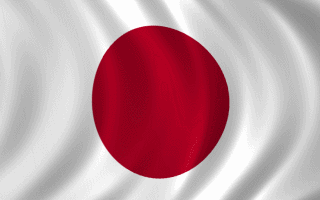

<!-- portfolio -->
<body>
<section class="NEGARA" id="NEGARA">
    <div class="container">
      <div class="row">
        <div class="col-sm-12">
          <h2 class="text-center" align="center">NEGARA</h2>
          <hr>
        </div>
      </div>
      <div class="row">
        <div class="col-sm-3">
          <a href="img/Jepang.gif" class="thumbnail" style="display:block; margin:auto;">
            
          </a>
          <section class="PENJELASAN" id="PENJELASAN ">
            <div class="container">
                <div class="row">
                    <div class="col-sm-4">
                      <p2>Jepang (Jepang: 日本 Nippon atau Nihon; nama resmi: 日本国 Tentang suara ini Nipponkoku atau Nihonkoku, nama harfiah: "Negara Jepang") adalah sebuah negara kepulauan di Asia Timur. Letaknya di ujung barat Samudra Pasifik, di sebelah timur Laut Jepang, dan bertetangga dengan Republik Rakyat Tiongkok, Korea Selatan, dan Rusia. Pulau-pulau paling utara berada di Laut Okhotsk, dan wilayah paling selatan berupa kelompok pulau-pulau kecil di Laut Tiongkok Timur, tepatnya di sebelah selatan Okinawa yang bertetangga dengan Taiwan (Republik Tiongkok).</p2>
                    </div>
                    <div class="col-sm-4">
                      <p2>Jepang terdiri dari 6.852 pulau[14] dan menjadikannya sebagai negara kepulauan. Pulau-pulau utama dari utara ke selatan adalah Hokkaido, Honshu (pulau terbesar), Shikoku, dan Kyushu. Sekitar 97% wilayah daratan Jepang berada di keempat pulau terbesarnya. Sebagian besar pulau di Jepang bergunung-gunung, dan sebagian di antaranya merupakan gunung berapi. Gunung tertinggi di Jepang adalah Gunung Fuji yang merupakan sebuah gunung berapi. Penduduk Jepang berjumlah 128 juta orang, dan berada di peringkat ke-10 negara berpenduduk terbanyak di dunia. Tokyo secara de facto adalah ibu kota Jepang, dan berkedudukan sebagai sebuah prefektur. Tokyo Raya adalah sebutan untuk Tokyo dan beberapa kota yang berada di prefektur sekelilingnya. Sebagai daerah metropolitan terluas di dunia, Tokyo Raya berpenduduk lebih dari 30 juta orang.</p2>
                    </div>
                    <div class="col-sm-4">
                      <p2> Menurut mitologi tradisional, Jepang didirikan oleh Kaisar Jimmu pada abad ke-7 SM. Kaisar Jimmu memulai mata rantai monarki Jepang yang tidak terputus hingga kini. Meskipun begitu, sepanjang sejarahnya, untuk kebanyakan masa kekuatan sebenarnya berada di tangan anggota-anggota istana, shogun, pihak militer, dan memasuki zaman modern, di tangan perdana menteri. Menurut Konstitusi Jepang tahun 1947, Jepang adalah negara monarki konstitusional di bawah pimpinan Kaisar Jepang dan Parlemen Jepang.</p2>
                      </div>
                    <div class="col-sm-4">
                      <p2>Sebagai negara maju di bidang ekonomi,[15] Jepang memiliki produk domestik bruto terbesar nomor dua setelah Amerika Serikat, dan masuk dalam urutan tiga besar dalam keseimbangan kemampuan berbelanja. Jepang adalah anggota Perserikatan Bangsa-Bangsa, G8, OECD, dan APEC. Jepang memiliki kekuatan militer yang memadai lengkap dengan sistem pertahanan modern seperti AEGIS serta skuat armada besar kapal perusak. Dalam perdagangan luar negeri, Jepang berada di peringkat ke-4 negara pengekspor terbesar dan peringkat ke-6 negara pengimpor terbesar di dunia. Sebagai negara maju, penduduk Jepang memiliki standar hidup yang tinggi (peringkat ke-8 dalam Indeks Pembangunan Manusia) dan angka harapan hidup tertinggi di dunia menurut perkiraan PBB. Dalam bidang teknologi, Jepang adalah negara maju di bidang telekomunikasi, permesinan, dan robotika.</p2>
                      </d>
                    <div class="col-sm-4">
                      <p2>Jepang disebut Nippon atau Nihon dalam bahasa Jepang. Kedua kata ini ditulis dengan huruf kanji yang sama, yaitu 日本 (secara harfiah: asal-muasal matahari). Sebutan Nippon sering digunakan dalam urusan resmi, termasuk nama negara dalam uang Jepang, prangko, dan pertandingan olahraga internasional. Sementara itu, sebutan Nihon digunakan dalam urusan tidak resmi seperti pembicaraan sehari-hari.</p2>
                    </div>
                    <div class="col-sm-4">
                        <p2>Kata Nippon dan Nihon berarti "negara/negeri matahari terbit". Nama ini disebut dalam korespondensi Kekaisaran Jepang dengan Dinasti Sui di Tiongkok, dan merujuk kepada letak Jepang yang berada di sebelah timur daratan Tiongkok. Sebelum Jepang memiliki hubungan dengan Tiongkok, negara ini dikenal sebagai Yamato (大和). Di Tiongkok pada zaman Tiga Negara, sebutan untuk Jepang adalah negara Wa (倭).</p2>
                      </div>
                    <div class="col-sm-4">
                        <p2>Dalam bahasa Tionghoa dialek Shanghai yang termasuk salah satu dialek Wu, aksara Tionghoa 日本 dibaca sebagai Zeppen. Dalam dialek Wu, aksara 日 secara tidak resmi dibaca sebagai [niʔ] sementara secara resmi dibaca sebagai [zəʔ]. Dalam beberapa dialek Wu Selatan, 日本 dibaca sebagai [niʔpən] yang mirip dengan nama dalam bahasa Jepang.</p2>
                    </div>
                    <div class="col-sm-4">
                        <p2>Kata Jepang dalam bahasa Indonesia kemungkinan berasal dari bahasa Tionghoa, tepatnya bahasa Wu. Bahasa Melayu Klasik juga menyebut negara ini sebagai Jepang (namun ejaan bahasa Malaysia memakai ejaan Jepun). Kata Jepang dalam bahasa Melayu ini kemudian dibawa ke Dunia Barat oleh pedagang Portugis, yang mengenal sebutan ini ketika berada di Malaka pada abad ke-16. Mereka lah yang pertama kali memperkenalkan nama bahasa Melayu tersebut ke Eropa. Dokumen tertua dalam bahasa Inggris yang menyebut tentang Jepang adalah sepucuk surat dari tahun 1565, yang di dalamnya bertuliskan kata Giapan.</p2>
                    </div>
                  </div>
                </div>
              </section>
        </div>
      </div>
    </div>
    <link rel="stylesheet" href="Style5.css">
  </section>
  
  <script src="Tugas1.js"></script>
  </body>
<!-- akhir portfolio -->
<!-- footer -->
<footer>
    <div class="container text-center">
      <div class="row">
        <div class="col-sm-12">
          <p align="right">&copy; copyright 2021 | </p>
<!-- akhir footer -->